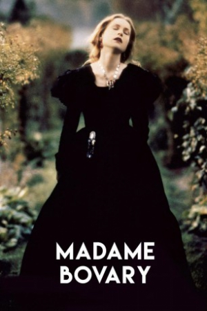

Country:France, 143 minutes
Spoken languages:French
Genres:Romance, Drama, History
Director(s):Claude Chabrol
Writer(s):Claude Chabrol, Gustave Flaubert
Video Codec:Unknown
Number: 2815


Certification:
Storyline:
Bored with the limited and tedious nature of provincial life in 19th-century France, the fierce and sensual Emma Bovary finds herself in calamitous debt and pursues scandalous sexual liaisons with absolute abandon. However, when her volatile lifestyle catches up to her, the lives of everyone around her are endangered.
Cast:

Medium: Bluray,
Comments: Part of: Lies & Deceit - Five Films by Claude Chabrol
Loaned: No
Aspect ratio: Unknown